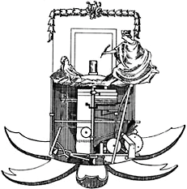

Knaus, Friedrich von, geb 7. 2. 1724 Aldingen bei Ludwigsburg (Deutschland), gestorben am 14. 8. 1789 Wien, Hofmechaniker. Wurde 1757 nach Wien berufen, wo er das Physikalische Hofkabinett einrichtete, dessen Direktor er wurde. Konstruierte 1760 einen Schreibautomaten (im Technischen Museum Wien), einen Schreibtisch mit Kopiermaschine (Durchschrift) und "bewegliche Bildertafeln".